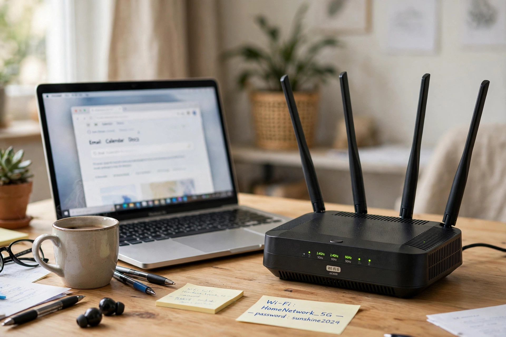

Wi-Fi
| Wi-Fi | |
|---|---|
| Standard | IEEE 802.11 |
| Brand owner | Wi-Fi Alliance |
| Introduced | 1997 (standard); 1999 (brand) |
| Bands | 2.4 GHz, 5 GHz, 6 GHz |

The Wi-Fi logo, a stylised radio-wave symbol in black and white
Wi-Fi is a family of wireless network protocols based on the IEEE 802.11 standards, commonly used for local area networking of devices and for Internet access. A device equipped with Wi-Fi can connect to a network through a wireless access point — the box most homes call a router — which bridges the wireless and wired worlds.
The name, coined in 1999 by branding firm Interbrand for the industry consortium now called the Wi-Fi Alliance, is often said to play on 'hi-fi' (high fidelity); it is not officially short for 'wireless fidelity'. The underlying technology's roots reach back to a 1985 US regulatory decision opening unlicensed spectrum bands, and to work by a CSIRO team in Australia whose patents on multipath signal processing became foundational.
Generations
Successive 802.11 amendments have multiplied speed and capacity: 802.11b (1999, 11 Mbit/s) brought mass adoption, aided by Apple's AirPort base station; 802.11g and n added speed; 802.11ac (Wi-Fi 5) moved to the 5 GHz band; Wi-Fi 6/6E (802.11ax) added the 6 GHz band and better handling of crowded areas; and Wi-Fi 7 (802.11be) pushes theoretical rates beyond 40 Gbit/s. Security evolved from the broken WEP through WPA and WPA2 to WPA3. Wi-Fi competes and coexists with wired Ethernet and mobile cellular data, and now carries the majority of the world's Internet traffic within buildings.